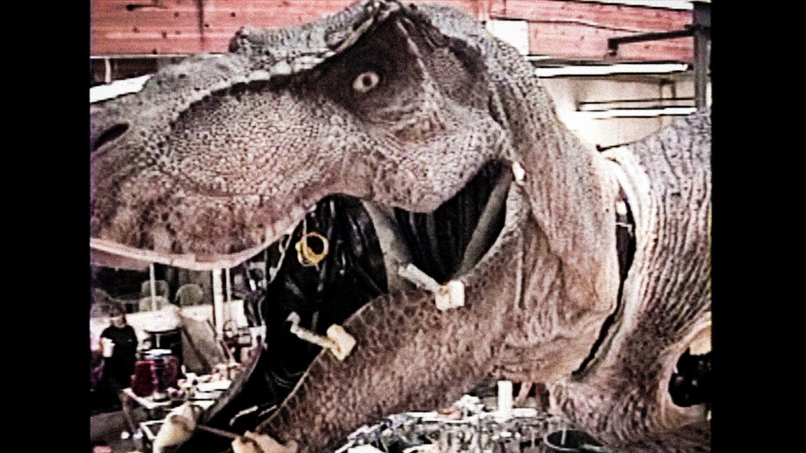

T-rex assombrado
Antes de decidir usar animais animatrônicos e imagens de computação gráfica para os efeitos relacionados aos dinossauros, Spielberg (diretor) queria usar animação em stop-motion para esses efeitos.
Durante as gravações, o Tiranossauro Rex ocasionalmente ficava com defeito devido à chuva. A produtora Kathleen Kennedy relembra que a situação inicialmente assustava a equipe: “O T-rex ficava maluco às vezes. Nos assustava muito. Estávamos almoçando e, de repente, o T-rex ganhava vida. A princípio não sabíamos o que estava acontecendo, e então percebemos que era a chuva. Você ouvia pessoas começarem a gritar”.

Jeff Goldblum VS Jim Carrey
No papel do Dr. Ian Malcolm, Jeff Goldblum é um dos primeiros nomes que vem à cabeça quando pensamos no elenco da franquia. Contudo, ele não vou o único a lutar pelo papel. Jim Carrey também fez audição para o personagem.